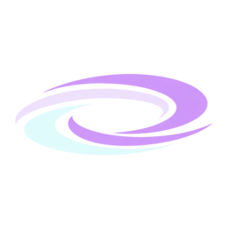

conectando ao servidor…
não está carregando? o servidor pode estar desligado, ou o endereço mudou (o endereço do túnel do Cloudflare muda toda vez que o servidor reinicia).
qual é o endereço do servidor? pede pra quem hospeda — aparece quando ele roda npm start.
npm start
pode colar o link inteiro. também aceita IP (ex: 203.0.113.5:3000).